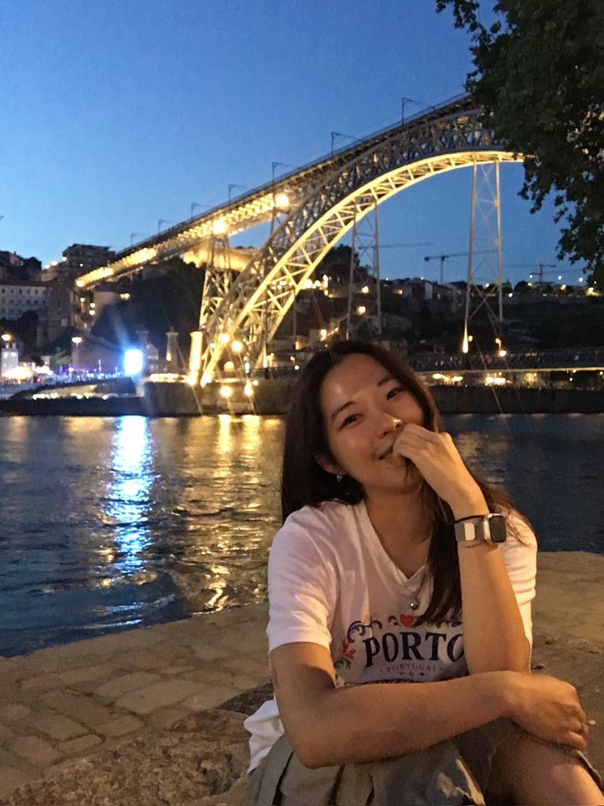

Yujin Kim
I am an undergraduate student in Computer Engineering at DGIST (Daegu Gyeongbuk Institute of Science and Technology). I am currently a Research Intern at Massachusetts General Hospital, affiliated with Harvard Medical School, where I work on LLM-based retrieval and knowledge graphs for clinical question answering.
Previously, I worked at the Intelligent Systems and Learning Lab at DGIST on vision-language-action models and egocentric hand pose forecasting. My research interests include multimodal AI, reasoning, world models, and embodied intelligence — broadly, AI systems that can understand and interact with the real world. I am also interested in how rapidly advancing AI tools are changing the way we learn, conduct research, and turn ideas into working prototypes.
news
- Sep 2026
- Continuing research on LLM-based retrieval and knowledge graphs at Massachusetts General Hospital.
- Jul 2026
- Started a research internship at Massachusetts General Hospital.
- 2026
- Our work “EggHand: A Multimodal Foundation Model for Egocentric Hand Pose Forecasting” appeared in CVPR Findings 2026.
- Jan 2026
- Started an exchange semester in Computer Science at the University of Groningen.
research & experience
-
Research Intern Jul 2026 – PresentMassachusetts General Hospital (Harvard Medical School)
LLM-based retrieval and knowledge graphs for clinical question answering.
-
Research Intern Jul 2025 – Jan 2026Intelligent Systems and Learning Lab, DGIST
Vision-language-action models and egocentric hand pose forecasting, including the development of visualization pipelines.
-
Undergraduate Research Project Jan 2025 – Dec 2025Diffusion-Based Robot Control for Imagination with Surprise Theory
Group research exploring diffusion-based robot control for imagination-driven robotic action generation.
publication
selected projects
- Interactive Mini Game — a small browser game built as an experiment in rapidly turning an idea into a playable prototype with an AI coding assistant.
education
-
DGIST Feb 2023 – PresentDaegu Gyeongbuk Institute of Science and Technology
-
University of Groningen Jan 2026 – Jun 2026
-
University of California, Berkeley Jun 2023 – Aug 2023